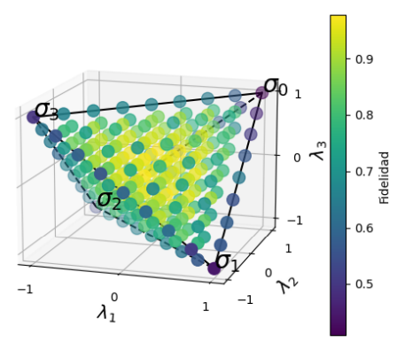
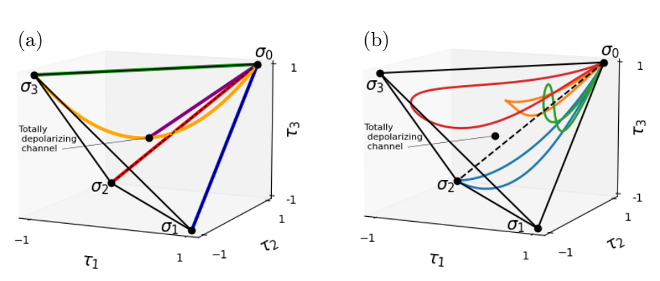
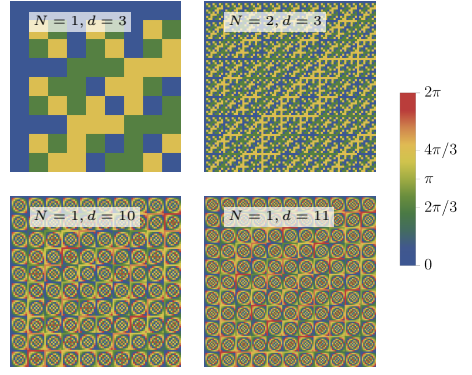
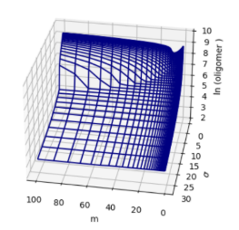

Aquí muestro algunos de los proyectos relacionados con temas de física o matemáticas que
realicé durante la licenciatura en Física en la UNAM o durante la maestría en Física de Sistemas Complejos en la Universidad de Copenhague.
1. Simulación de Mapas Dinámicos de Pauli de un Qubit en Computadoras Cuánticas (tesis de Licenciatura en Física en la UNAM)
Este proyecto fue mi tesis de licenciatura para la carrera de Física en la UNAM. Empecé a trabajar en este proyecto como parte de una materia en abril de 2022 con mi asesor, el Dr. Carlos Pineda. Después de unos meses, decidimos ampliarlo para usarlo como tesis de licenciatura.
Finalmente, defendí mi tesis en mayo de 2023 y aprobé con mención honorífica. Además, gané el diploma Juan Manuel Lozano Mejía, otorgado a las mejores tesis del instituto de física.

Imagen con uno de los resultados de la tesis, la fidelidad obtenida de los canales cuánticos al correrlos en las computadoras cuánticas de IBM.
El proyecto consiste en lo siguiente:
- Se estudia la teoría de los canales de Pauli, que son procesos cuánticos por los que puede pasar un qubit y se usan para modelar algunos tipos de decoherencia y ruido tiene una computadora cuántica.
- Se propone un algoritmo cuántico, programado en la librería Qiskit de Python para simular estos canales de Pauli en computadoras cuánticas.
- Se corre el algoritmo cuántico propuesto para una variedad de canales de Pauli. Esto se hace utilizando las computadoras cuánticas que tiene disponibles IBM a través de la nube.
- Se generaliza el algortimo para simular ahora mapas dinámicos de Pauli, que se definen como una curva continua parametrizada de canales de Pauli.
- Se corre el algoritmo para mapas dinámicos de Pauli en computadoras cuánticas y se estudian las consecuencias teóricas y computacionales de restringir el algoritmo a que use solamente una rotación cuántica parametrizada.
2. Quantum Simulation of Pauli Channels and Dynamical Maps: Algorithm and Implementation (autor principal de artículo de investigación publicado en la revista Plos ONE)
Mientras trabajábamos en la tesis de licenciatura del punto anterior, mi asesor y yo decidimos ampliar el trabajo y escribir un artículo de investigación para publicarlo en una revista internacional de física (en este caso, el área de información y computación cuántica de la revista Plos ONE).
En dicho artículo soy yo el autor principal y se tienen las siguientes ampliaciones respecto al trabajo de tesis:
- Se generaliza la teoría de canales de Pauli al caso de sistemas de un número arbitrario de qubits, en lugar de sólo uno.
- Se generaliza el algoritmo para simular canales de Pauli al caso de sistemas de varios qubits.
- Se llevan acabo más simulaciones computacionales del algoritmo usando computadoras cuánticas y se hace un análisis más completo de los resultados obtenidos.

Imagen de algunos de los mapas dinámicos de Pauli estudiados, dibujados dentro del tetraedro de canales de Pauli.
3. Weyl channels for multipartite systems (Autor principal de artículo de investigación publicado en la revista Physical Review A)
Este proyecto inició mientras trabajaba con mi asesor de tesis de licenciatura, el Dr. Carlos Pineda. Él me mostró un proyecto que acababa de realizar su grupo de investigación, el cual me interesó mucho. Tras pensar mucho sobre dicho proyecto, se me ocurrió una forma de hacer sus resultados más simples, generales y aplicables.
Le propuse mis ideas a mi asesor y empezamos a trabajarlo junto con un alumno de maestría y otros dos investigadores de física. El resultado es un artículo del cual soy autor principal publicado en la prestigiosa revista Physical Review A.

Imagen de uno de los resultados del proyecto, en la que se visualiza los patrones de algunos de los mapas de Weyl estudiados.
Este proyecto es bastante abstracto y denso matemáticamente, y a grandes razgos consiste en lo siguiente:
- Estudiamos de manera teórica un tipo de proceso cuántico conocido como canales de Weyl, que aplican a sistemas cuánticos consistentes de cualquier número de partículas y cada partícula con cualquier número de dimensiones.
- Obtenemos resultados teóricos sobre estos canales de Weyl, en específico, obtenemos el espectro de la matriz de Choi-Jamiolkowski asociada a estos canales.
- Obtenemos las condiciones matemáticas que deben de cumplir estos canales para ser físicamente válidos (que no rompan con principios de la mecánica cuántica).
- Encontramos una relación entre las condiciones para que un canal de Weyl sea físicamente válido y un área de las matemáticas aparentemente desconectada a esto, conocida como teoría de grupos.
- Determinamos un método de reconocer si un canal de Weyl es físicamente válido a partir del uso de teoría de grupos.
- Mostramos un algoritmo para encontrar todos los canales de Weyl posibles para un número de partículas y dimensiones determinadas.
- Usamos el algoritmo propuesto para estudiar computacionalmente los canales de Weyl y generar imágenes como la de arriba.
También presenté una versión preliminar de este trabajo con un póster en la escuela de computación cuántica en el International Centre for Theoretical Physics en Sao Pablo, Brasil.
4. Learning Optimal Erasure of a Static Random Access Memory (autor principal de artículo de Investigación próximo a publicarse en New Journal Physics)
Este articulo de investigación inició como un proyecto en el Instituto Neils Bohr en Copenhague durante mi maestría, que luego mi asesor y yo decidimos extender para poder publicarlo. Ahora está en proceso de ser publicado, siendo yo el autor principal.
A grandes razgos, la idea del proyecto es usar la teoría de termodinámica estocástica para modelar una memoria RAM y obtener una forma de calcular el calor que libera la memoria al borrar un bit. Posteriormente, se usan técnicas de Machine learning y diferenciación automática para encontrar el protocolo que se debe de seguir para borrar la memoria de forma que produzca la menor cantidad de calor posible.
 Imagen de uno de los resultados del proyecto.
Imagen de uno de los resultados del proyecto.
Más a detalle, lo que hicimos en este trabajo es lo siguiente:
- Se describe la teoría de una celda de memoria RAM, llegando hasta una ecuación maestra que sea termodinámicamente consistente.
- Se encuentra una expresión matemática para la entropía producida por una celda de memoria RAM al borrar un bit de información de la memoria.
- Usando la librería JAX de Python, se crea un algoritmo que dado un protocolo para borrar un bit, calcula la entropía producida y el estado final del bit.
Luego, utilizando diferenciación automática de la librería JAX, se calcula el gradiente de la entropía producida con respecto a los parámetros que definen al protocolo usado para borrar el bit.
- Se usa descendencia de gradiente con el optimizador ADAM para encontrar el protocolo que minimiza la producción de entropía pero también maximiza qué tanto fue borrado el bit (es decir, se usa optimización multiobjetivo para tomar en cuenta los dos objetivos que se buscan optimizar).
- Se repite lo anterior para distintas duraciones del protocolo, para concluir sobre cómo cambia la producción de entropía respecto a la duración del protocolo
- Se concluye que es posible borrar una celdad de memoria RAM arbitrariamente rápido con una disipación de calor que no crece demasiado al disminuir el tiempo de protocolo. Además, se encuentran explícitamente los protocolos de borrado que minimizan la disipación de calor.
5. Machine Learning for Entropy Production in Stochastic Systems (tesis para la maestría en física de sistemas complejos en la Universidad de Copenhague)
Este proyecto es mi tesis de maestría en el Instituto Neils Bohr. La tesis consiste en estudiar el movimiento de células, las cuales naturalmente se mueven de forma estocástica debido a
colisiones con otras células alrededor. En el trabajo hacemos algunos cálculos teóricos sobre sus propiedades termodinámicas (producción de entropía, eficiencia, calor, etc.).
Además, la parte central de la tesis es el entrenamiento de redes neuronales para que dada la trayectoria de una de estas células, puedan predecir la producción de entropía de la célula.

Imagen de uno de los resultados del proyecto.
Más a detalle, lo que se hace en la tesis es lo siguiente:
- Se describe la teoría de la termodinámica estocástica.
- Se crea y entrena una red neuronal para estimar la tasa de producción de entropía de varios sistemas físicos estocásticos sencillos.
- Se prueba que es imposible usar el modelo de esta red neuronal para sistemas estocásticos que tengan ruido activo (es decir, que sean autoprupulsados, como una bacteria que se desplaza con un flagelo).
- Para estudiar células con ruido activo, se entrenan otras redes neuronales, ahora siendo redes neuronales recurrentes para que predigan la cantidad de ruido activo de las trajectorias.
6. Mapa Iterativo de Gauss en Números Complejos (pequeño proyecto computacional para la materia de licenciatura "Sistemas Dinámicos y Caos")
Éste es un pequeño proyecto que hice como parte de la materia de licenciatura "Sistemas Dinámicos y Caos". En este proyecto extiendo la definición de un mapa iterativo conocido como mapa iterativo de Gauss
y luego lo programo en Python y estudio varias de sus propiedades, mientras genero muchas imágenes como la siguiente:

Figura creada en Python de algunos de los fractales que surgen al extender el mapa iterativo de Gauss a los números complejos.
Más a detalle, se hace lo siguiente:
- Se estudia la teoría de los mapas dinámicos, como en particular el mapa logístico.
- Se estudia sobre los fractales como el de Mandelbrot y su relación con el mapa logístico.
- Se define el mapa iterativo de Gauss y se extiende a los números complejos.
- Se crean diagramas de bifurcación del mapa de Gauss y se estudian sus propiedades.
- Se estudian los fractales que surgen al extender el mapa de Gauss a los números complejos y se explica el surgimiento de fractales de Mandelbrot.
7. Periodic Spin Chain (pequeño proyecto computacional para la materia de maestría "Complex Physics")
Éste es un pequeño proyecto que hice como parte de la materia de maestría "Complex Physics" en la Universidad de Copenhague.
El proyecto consiste en estudiar una cadena de espines y programar un algoritmo de Montecarlo para calcular algunas cosas como la magnetización promedio o la energía.
Luego, se varía la temperatura del sistema y se estudian los cambios de fase que sucedan como función de la temperatura.

Figura creada en Python de algunos de los resultados.
8. Percolation and Avalanches (pequeño proyecto computacional para la materia de maestría de Complex Physics)
Éste es un pequeño proyecto que hice como parte de la materia de maestría "Complex Physics" en la Universidad de Copenhague.
El proyecto consiste en estudiar un problema conocido como percolación en una cuadrícula de 2 dimensiones. Se hace un programa en Python para estudiar este problema y se
calculan algunas cantidades, como la dimensión fractal de las "avalanchas" creadas en la percolación.

Figura creada en Python de una de las avalanchas.
9. Modeling proteasome dynamics in Parkinson's disease (pequeño proyecto computacional para la materia de maestría "Physics of Molecular Diseases"
)
Éste es un pequeño proyecto para la materia de maestría "Physics of Molecular Diseases". El proyecto consiste en estudiar y resolver computacionalmente
un sistema de ecuaciones que se propone como modelo para el desarrollo de Parkinson's.
Luego se proponen modelos alternativos, se estudian sus propiedades matemáticas y se ponen a prueba al programarlos en Python.

Figura creada en Python de algunos de los resultados.